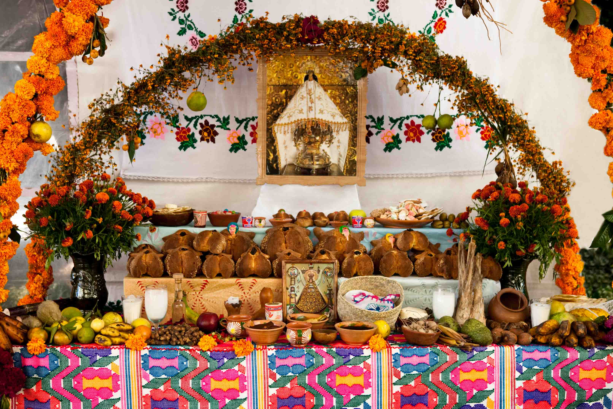

Calaveras: Festa dei Morti Messicana
Introduzione
Tradizioni
Galleria
Altare degli Antenati

Altare a casa Gonzales
Offerte di Cibo e Fiori
Fiori, pane, limoni e coca cola
Processioni Colorate
Maschere e tamburi